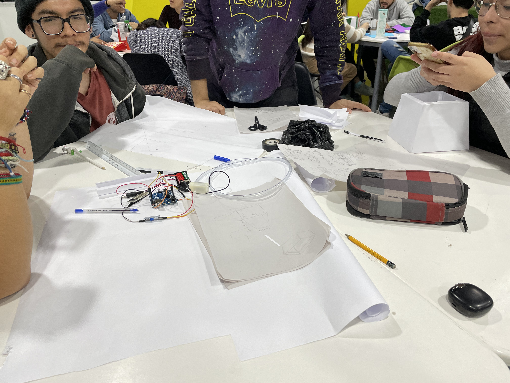
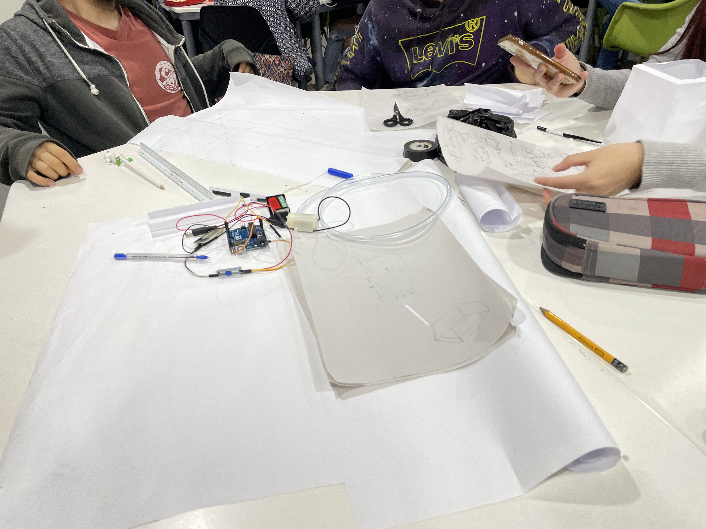
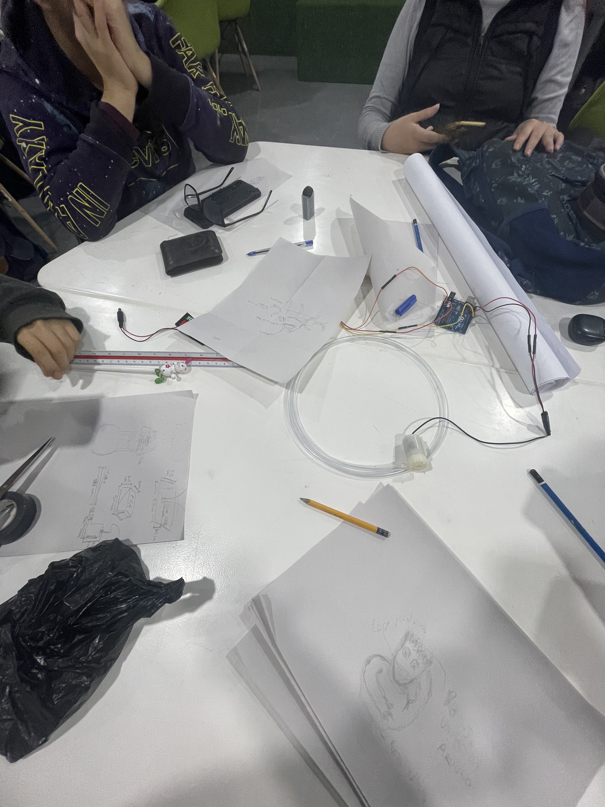

Promedio 2
Semana 9
Diseño y prototipo
Primeras impresiones
- Llevar materiales para cortar y pegar
- LLevar los diseños ya hechos la clase anterior
- Debate del diseño de prototipo por integrante de grupo
- Búqueda en Tinkercad
GRUPOS
PROYECTO: Sistema de riego automático - Arduino
¿Qué aprendimos hoy?
En la semana 9, vimos sobre Tinkercad, y la fuente de ayuda que es para nuestro proyecto. También en conjunto elegimos un diseño oficial para luego imprimirlo en 3D.
2 Noviembre, "Impresiones de Oscar al ver el diseño elegido ".
El profesor nos dio feedbacks sobre nuestro boceto y resalto los puntos a mejorar.
  2 Noviembre, "Boceto grupal".
En grupo debatimos sobre los diseños y elegimos uno.
Octubre, "MBA".
Diseñe el logo y le busque un nombre que se asocie con los integrantes del grupo, cambiando también de plataforma, de Visual Studio Code a Wix.
"Una gran meta debería asustarte un poco y emocionarte mucho."
Joe Vitale
28 Octubre, clase virtual.
Aquí aprendimos sobre las funciones de Tinkercad, y buscamos 6 diseños para nuestro proyecto para luego exponerlo en clase, y quedarnos como equipo con 12 diseños.
Presentación Interactiva, Semana 9
Autoevaluación, Semana 9